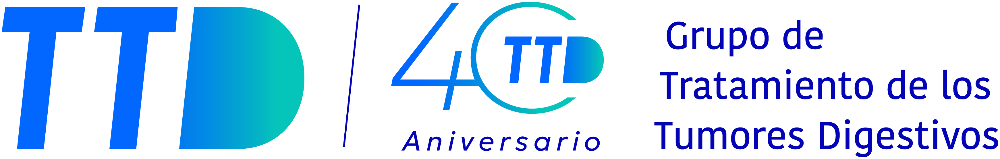

State of the Art in Gastric Cancer: Self-Assessment Program
Innovación en
Medicina de Precisión
Del mapa molecular a la supervivencia del paciente. El programa formativo definitivo basado en la evidencia exclusiva de la American Society of Clinical Oncology (ASCO).
"La fragmentación biológica del cáncer gástrico redefine el pronóstico y la estrategia en primera línea."
Más allá de la Quimioterapia:
La Era de la Precisión.
Justificación Clínica
Cubriendo Gaps Asistenciales en el SNS.
Metodología UX y Certificación Oficial.
Un entorno virtual de aprendizaje diseñado para garantizar la adquisición de competencias clínicas reales en oncología digestiva, integrando el prestigio de ASCO con la acreditación del SNS.
-
school
Evaluación Formativa Continua
Cuestionarios interactivos (Self-Assessments) con feedback razonado al instante basado en la evidencia ASCO.
-
auto_stories
Contenidos de Clase Mundial
Curaduría científica extraída directamente de los Journals de la American Society of Clinical Oncology (ASCO).
-
verified
Acreditación SNS
Certificado oficial con créditos de Formación Continuada (CFC) para la carrera profesional sanitaria.
Dimensiones de Capacitación.
Precisión
Molecular
- ▹ Relevancia clínica de la determinación de HER2, PD-L1, CLDN18.2 y MSI-H.
- ▹ Criterios de positividad y estandarización de técnicas inmunohistoquímicas.
Manejo Clínico
y Terapéutico
- ▹ Análisis de eficacia en inmunoterapia y terapias dirigidas (1ª Línea).
- ▹ Algoritmos de seguridad y profilaxis antiemética avanzada.
- ▹ Secuenciación personalizada basada en fenotipo.
Soft Skills y
Comunicación
- ▹ Uso de Medicina Narrativa para gestionar diagnósticos complejos.
- ▹ Integración de Toma de Decisiones Compartida y PROs.
- ▹ Prevención del desgaste profesional en equipos oncológicos.
Estructura Académica.
Aprendizaje progresivo. 3 Módulos compuestos por 8 apartados pedagógicos obligatorios para garantizar la asimilación.
Profundizar en el paisaje molecular actual y la relevancia clínica de la determinación de biomarcadores (HER2, PD-L1, CLDN18.2) para optimizar la selección de pacientes.
Análisis de la evidencia científica sobre el impacto de la inmunoterapia y las nuevas familias de fármacos dirigidos en el tratamiento de primera línea.
Integrar el manejo proactivo de la experiencia del paciente y la prevención del desgaste profesional dentro de un modelo de cuidado centrado en la persona.
¿A quién va dirigido?
El éxito en el manejo del cáncer gástrico avanzado depende de la coordinación transversal.
Oncología Médica
Prescripción de terapias dirigidas, inmunoterapia y secuenciación sistémica.
Anatomía Patológica
Implementación técnica IHC e interpretación de biomarcadores (CLDN18.2, PD-L1).
Aparato Digestivo
Diagnóstico endoscópico, calidad de muestras y manejo de comorbilidades.
Cirugía Digestiva
Manejo multimodal y decisiones de resecabilidad en respuesta favorable.
Comité Editorial.
KOLs de Referencia Nacional en Oncología Digestiva y Patología.
Dr. Pere Gascón
Consultor Senior Oncología. Real Academia de Medicina (Cat). Co-Director Lab. Oncología Molecular UB.
Dra. Paula Jiménez Fonseca
Sección Tumores Digestivos (HUCA). Coordinadora y fundadora del registro nacional AGAMENON-SEOM.
Dr. Federico Rojo Todo
Jefe de Servicio de Anatomía Patológica y Patología Molecular. Fundación Jiménez Díaz (Madrid).

Aval Solicitado
La técnica cura.
El humanismo sana.
Transformando la innovación oncológica en proyectos de vida.
Nuestra visión formativa trasciende el hito científico de las nuevas terapias dirigidas. Dotamos a los profesionales de la excelencia clínica y humana necesaria para acompañar de forma integral al paciente a lo largo de su tratamiento.